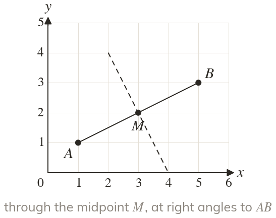
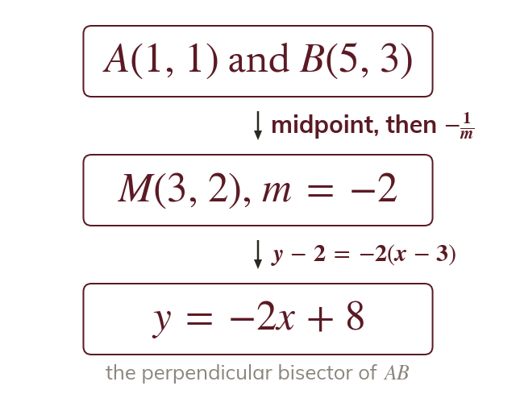

Parallel lines
Parallel lines have the same gradient, so they never meet. The lines and are parallel; only their y-intercepts differ.
Gradients alone decide whether two lines are parallel or meet at right angles, so no angle needs measuring. The perpendicular bisector of a segment uses both ideas at once, and next lesson finds lengths and areas from these lines.
Work down the page at your own pace. Write every answer in your book first, then click to check it.
Read each card, then follow the worked examples one step at a time.
Parallel lines have the same gradient, so they never meet. The lines and are parallel; only their y-intercepts differ.

Two lines are perpendicular when their gradients multiply to
A line with gradient is perpendicular to a line with gradient since

Find the new gradient first, then use Perpendicular to through the gradient is so
Pick an answer. If it's wrong, the feedback tells you which mistake it was.
Write the blanks in your book first, then tap each one to check.
Read each card, then follow the worked examples one step at a time.

Write each line in the form Equal gradients mean parallel, gradients that multiply to mean perpendicular, and anything else is neither.

The perpendicular bisector of AB passes through the midpoint of AB at right angles to it. Every point on it is the same distance from A as from .

Find the midpoint and the perpendicular gradient, then use For and M is and has gradient so the bisector has gradient
Pick an answer. If it's wrong, the feedback tells you which mistake it was.
Write the blanks in your book first, then tap each one to check.
Finished? Next lesson: 12.P5.4 Length and Area.
For each skill, tap the one that is true for you today. Your Revise pages start with anything you mark Not yet.
Your ratings are saved on this device only.
Log in, then search for a code to practise that skill.